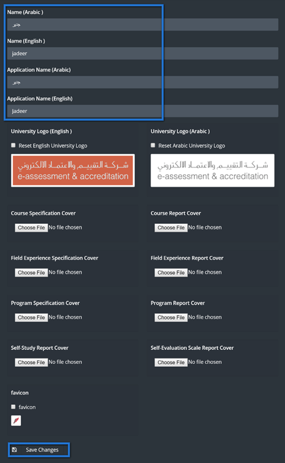
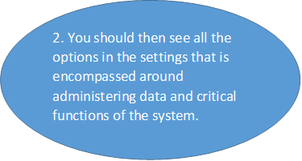
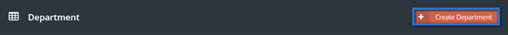
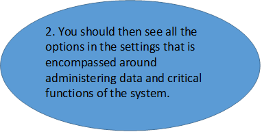
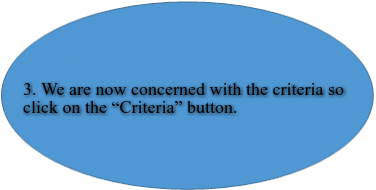
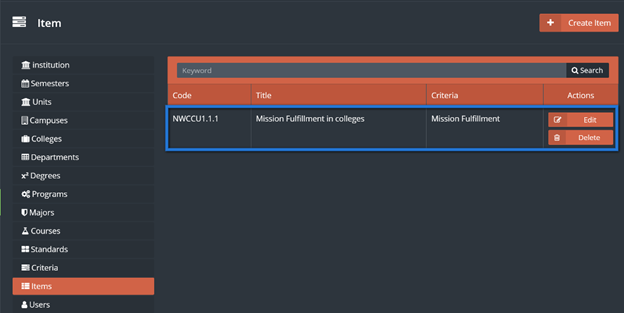

Settings
Table of Content ¶
- Manage the Institutions
- Semester
- Managing Miscellaneous Units
- Managing Campuses
- Managing Colleges
- Managing Departments
- Managing Degrees
- Managing Programs
- Managing Majors
- Managing Courses
- Managing Standards in Settings
- Managing Criteria in Settings
- Managing Items in settings
- Managing Users in Settings
- Managing Roles in Settings
- Managing Jobs in Settings
- Translation
- Managing Accreditation
- Notifications
1. Manage the Institution ¶
The institution contains general important information about the institution and its identity this critical access will be granted to the super admin.
-
To access the institution first, you need to go to the
settings module in the sidebar.
-
Change
the required information simply by clicking on the box or by uploading an image
for the required field, then click on save changes.

2. Semester ¶
The Jadeer product should be deployed with existing semesters of the university but there may be times when these semester’s need to change such as adding a new semester. Authorization of this is only granted the super administrator so first he needs to login with his user account.
-
First you need to go to the settings module in the sidebar
-
You should now see a list of semesters that have been previously added or
integrated. Each semester listed or deleted can be added or deleted with
corresponding edit or delete button.
The current semester field shows if this is the current working semester accordingly with the date. Also note that some integrated semesters may not have start and end dates so they have a placeholder label saying “Integrated Semester”. Now add a new future semester by clicking the Create Semester button.
-
In the add semester screen enter the Semester’s title or label in both English and
Arabic name fields along with the start and end dates as all fields are required for
saving.
Now save the semester by clicking the save button.
-
You should then be redirected to the semester listing seeing the newly added
semester at the last row along with a successfully added notification.
Saving process should redirect you to the main settings page along with a message indicates that the saving process was successful.
3. Managing Miscellaneous Units ¶
In the institution there exist units other than the academic units that need to be included in the quality management of the system. Examples of these units may include the admissions and records department, Library or the student services department. All these contribute to the educational quality of the institution. If the super admin needs to add more units then he can do so from the settings.
-
First you need to go to the settings module in the sidebar.
-
You should see the existing units as a listing. Go on and click the “Create Unit”
button to add the new unit.
-
In the add unit page type the unit’s name in arabic and english.
-
Now click the “Edit” button in the mission block to add this unit’s mission
statement.
-
A popup should appear to add the mission statement so type in the mission statements
in
both languages or type in the English mission statement in both fields as both are
required.
-
Then click the save button to add this unit’s mission statement.
You should see a successfully saved message indicating that the mission statement has been saved.
4. Managing Campuses ¶
An institution can have multiple campus locations and the Jadeer system should be deployed with your campus, but if the institution needs to rename a campus or add another campus that recently completed construction that it can easily do so. The super admin is authorized to manage the campuses so he needs to be logged in to do this.
-
First you need to go to the settings module in the sidebar, by clicking on others.
-
You should see the existing campuses as a listing. Go on and click the “Create
Campus” button to add a new campus.
-
Just type in the campus names in Arabic and English as both fields are required.
-
Then click the “Save Changes” button to add this campus.
-
You should be redirected back to the campuses listing page with a successfully saved message and see the new campus added to the
bottom of the listing.
5. Managing Colleges ¶
There should be existing colleges with the deployed Jadeer system, but there is also room for change if any modification should be made as deleting an obsolete college or adding one. The super admin is the only one authorized to manage colleges after logging in to the system.
-
First you need to go to the settings module in the
sidebar, by clicking on others.

The listing in this page is the colleges that exist in the system and each college has goals and objectives that can be administered by clicking the appropriate button. Also note that each college can be edited or deleted so you need be very careful as changes are applied system-wide affecting many users.
-
Go on to add a college by clicking the “Create College” button.
-
In the add college page, choose the campus and then put the name field in English and
Arabic as all these fields are required. The building size and land area fields are recommended, but can be updated later on.
-
Then save the college by clicking the save button below.
The newly added college should appear at the bottom along with a notification box indicating that the college was successfully added. This college has a mission, a vision, goals and objectives that can be viewed here and edited in the setup page of that college.
6. Managing Departments ¶
Departments in the institution can be a supplement to the hierarchical academic unit structure that the institution can choose to provide in the system. The super admin is the authorized user to manage the list of departments in the system.
-
First you need to go to the settings module in the menu
navigation.
In the listing page we can see all the departments in the system with their associated colleges along with two search criteria including “College” and a keyword search of the department. We can search for a department to make sure it doesn’t exist before adding it.
-
Click on the “Create Department” button.

-
In the add department page choose the parent college and enter
the department’s name in English and Arabic as all these fields are required.
-
Now add this department by clicking the save button to be redirected back to department’s listing page.
The newly added department should appear at the bottom of the listing and a message box should appear indicating that the department was successfully saved.
7. Manage Degrees ¶
The institution’s programs have multiple traits linking to other data structures in the Jadeer product. Of these traits, the program needs to have a degree. One 10s of programs have 1 degree in common, then any changes in this degree needs be done once to have this change reflected on all programs under this degree. This is why the super admin is the only authorized user to manage the degrees in the settings module.
-
First you need to go to the settings module in the menu navigation.

In the degrees listing page we see each possible degree a program can be associated with along with a column showing a flag of whether this degree is an undergraduate degree. Each department can be edited or deleted.
-
Click on the “Add Degree” button to add a new degree.
-
For the degree enter the Name in English and Arabic and check the undergraduate box
only if this is an undergraduate degree.
-
Now add this degree by clicking the save button at the bottom to then be redirected back to the degrees listing
page.
You should see the new degree added as the bottom most record along with a message box indicating that the degree was added successfully.
8. Manage Programs ¶
Academic programs are the essential part of an institution and many processes are strictly based on this data structure. General program management including updating its name or associated college can only be done by the super admin in the program settings.
-
First you need to go to the settings module in the sidebar.

In the program listing we have all the programs list along with the associated Degree, College and department. Each Program has can have a set of goals and objectives that can be viewed from here and managed from the dedicated setup page for that program. There is also a plan for each program which we will learn in a moment. Before creating a program, we can use the filter tools to search for the program using multiple search criteria including drilling down by college, department and degree.
-
Click the “Create Program” button to add a new program.
- In the add program page start by choosing the college to then choose corresponding department of that college associated with this program.
-
Then choose a degree level for the program and enter the program name in both the English and Arabic fields as all fields in the add program page are required.
-
Now add this program by clicking the save button to then be redirected to the program listing page.
Back at the program listing page, the newly add program should appear at the bottom of the listing shown at the end as it is the last added program and a message box should appear indicating that the program was added successfully.
-
Now click on the “Plan” button to the program just add to manage the program plan in the appropriate screen.
Here at the manage program plan page all courses that are required to complete this program should be listed here and manageable by adding, editing or deleting courses from the program plan.
-
Click the “Add a Course to the Program Plan” button to be redirected to choose an existing course from the system.
-
Now click the course field to open an appearing listing to browse courses and select one course to be added to the
program plan. You can search for a specific course using one or more of the
search criteria, then click the “Search” button to update the course listing.
- Now choose the course by clicking it to have the course field updated and the course listing browse box disappear.
-
Choose the course “Level” which is most-likely what year a student takes this course.
So for example, the level “2” indicates that 2nd year students take this course
and so on.
-
add this course to the program plan by clicking the “Save” button at the button to be redirected to the courses of the program plan listing.
The course should be added to the bottom of the listing since it is the last added course along with a corresponding edit button (to change the course) and delete button (to remove the course association to this program plan). A message box should also appear indicating that the course has been successfully associated to the program plan.
9. Manage Majors ¶
A program can have a set of majors each defining a particular track a student can take within the program. Majors are a supplement to the programmatic information needed for quality and accreditation. Only the super admin is authorized to manage the majors listing for all programs in the settings module.
-
First you need to go to the settings module in the sidebar.
You should then see all the options in the settings that is encompassed around administering data and critical functions of the system.
In the majors listing we can see each major with its associated program and 2 buttons in each row, an edit and delete button. Before adding a new major there is keyword search box to check if it exists.
-
Now click the “Create Major” button to be redirected to the add major page.
-
In the add major page choose the associated program from the dropdown and then enter the
major name in English and Arabic.
-
Now at the bottom, click the save button to go back to the major listing page.
At the major listing page, you should see the new major added at the bottom of the listing as it is the last added major and a message box should appear indicating that the major was saved successfully.

10. Managing Courses ¶
Each college and department pair has a set of courses associated with that college and department. The course specific information and listing is updated frequently as the material is updated on a regular basis and the changes should be reflected in the course name, description and associated college and department pair.
The super admin is the only one authorized to manage the main course information such as its name and college association.
-
First you need to go to the settings module in the sidebar.

In the courses listing, there are many directions to go from here including managing course sections, viewing goals or objectives. The search criteria at the top allows you to search for an existing course before adding it by its college, department or searching a keyword. We will start by adding a course,
-
Click the “Create Course” button to be redirected to the add course page.
-
In the add course page all fields are required to be filled in before saving. First choose the associated college then its corresponding
department. Enter the course name and code in both English and Arabic. Finally, choose if the course is practical or theoretical.
-
Now save the course by clicking the save button below to be redirected back to the course listing page.
Back to the course listing page the course should be at the bottom of the list and a message box should show indicating that the course was added successfully.
10.1 Managing Course Sections ¶
In the courses there are associated course sections that can managed within the course settings. Course sections are classes of the course along with instructor of the class. The classes should be readily available, but changes should be made only when necessary. The authorized user to do the changes here is the super admin.
-
In the courses listing we see that there are drill down controls each representing a criterion
including college, department and keyword search. To manage course sections for
a course you need to find it by using the drill down controls and/or the paging
controls under the listing.
-
After finding the course that will need to have its course sections updated click the “Sections”
button to be redirected to appropriate course sections listing page.
In the sections listing page, all course sections for the selected course should be shown here including the name, associated semester for the course, course instructors, along with an edit, manage and delete button.
-
To start off, click the “Create Course Section” button to add a new course section for this course
(name is shown in the breadcrumb at the top).
In the add course section page, you first find that the section ID is automatically generated. Then you need to choose the semester the course section will be at.
-
Now for the instructors of this course section, the “Add More” button below will add 1 more
instructor field. In the instructor field click on the field to open the browse
box which is the listing of possible users that can be instructors.
- The browse box has the keyword search drill down control to find the intended user. So enter the name of the instructor in the keyword search box.
- Click the search button to update the listing in the browse box.
-
Click on the instructor for this course once the list updates to have the field updated with
the instructor name.
-
Once all the instructors have been chosen, click the save button at the bottom to be
redirected back to the course section listing page.
The course section should be added to the bottom of the listing along with the message box indicating that the course section was added.
-
Now the schedule and location of this course section need to be set. Click the manage button to be
redirected to that page.
- In the schedule and location management page we see the days of the week along with a check box to include that day in the schedule. So first enter the location of where the class will be held and check the days that the course section will be in to display the from and to times input next to that day.
-
Now define the from and to times in each day by clicking on the field to have the time setting
controls appear and defining using the arrows of the 3 fields: Hour, Minute and
AM/PM.
Once the location days and times are set just click the save button to update the schedule and location of the course section and be redirected back to course section listing page.
-
Back at the course section listing page a message box should appear indicating that the
schedule and location information for that course section has been updated. Now
we need associate all students enrolled in the course section by clicking the
“Students” button for the course section.
-
In the students of the course section (class roster) page a list of the students in
that class are shown along with buttons to add, remove or change students from
the listing. Now click the “Add Student” button to bring up the add student
popup.
- Now click the student field to display the browse student user box. In the browse student user box you can search for a student user using the keyword search box and then click the “Search” button to update the listing of possible student users.
-
Once the student list updates, click on the student user to have
the browse student box disappear and the name of the student appear in the
student field.
-
Once the student field has the intended student name displayed then just click the
save button to add the student to the listing and have add student popup
disappear.

-
A message box should appear indicating that the student user was added
successfully and that added student should show at the bottom of the listing.
11. Managing Standards in Settings ¶
The standards are part of the accreditation process existing in various modules of the system including the Accreditation Tree, Performance Scoring and KPI module. In the settings module, the standards are defined at the top of the hierarchy so that others can derive from the standards listing and modify it accordingly. Only the super admin can manage the standards in the settings module.
-
First you need to go to the settings module in the sidebar.

In the listing page of the standards we see each standard along with its code. Each standards can be removed or changed.
-
Click the “Create Standard” button to be redirected to the add
standard page.
-
In the add standard page just add the standard’s name or title
both in English and Arabic as well as its code.
-
Now add this standard to the listing by clicking the save
button below to be redirected back to the listing page.
The new standard should show at the bottom of the listing and a message box also appears indicating that the standard was added successfully.
12. Managing Criteria in Settings ¶
The criteria in the settings module are hierarchically below the standards in the settings. Each item should be associated with a parent standard. The super admin is the only one authorized to manage criteria in the settings module.
-
First you need to go to the settings module in the sidebar.
You should then see all the options in the settings that is encompassed around administering data and critical functions of the system

The listing of the criteria slightly differs from its parent standards. The title and code of the criterion exists along with its parent standard, type and flag of whether it is a program.
-
Click the “Create Criterion” button to be redirected to the add
criterion page.

In the add criterion page you need to do the following:
- select a standard
- Enter the criterion title in both English and Arabic
- Enter the criterion code in both English and Arabic
- Choose the process/result basis of the criterion
- Choose the academic unit level
-
At the bottom, click the save button to add the criterion to the listing and be redirected back to the listing page
Back at the listing page the criterion should be added and a message box shows indicating that the criterion was added successfully and the new criterion should show at the bottom of the list.
13. Managing Items in settings ¶
The items are part of accreditation and quality and are hierarchically below the criteria and the criteria is hierarchically below standards. Items have one corresponding parent criterion and can be derived in other modules and then changed to adapt accordingly. Only the super admin can manage items in the settings module.
-
First you need to go to the settings module in the sidebar.
-
In the items listing, there is
the item title, code and its associated parent criterion. Click the “Create
Item” button to be redirected to the add item page.
-
Start by choosing the associated
parent criterion which must have an associated standard to it. Then simply
enter the item’s title and code in both English and Arabic.
-
Now at the bottom, click the
save button to add the item to the listing and be redirected back to the
listing page.

A message box should appear at the listing page indicating that the item was successfully saved and the item should appear at the bottom of the listing.
14. Managing Users in Settings ¶
The users in the settings are broken down into three groups, students, faculty and staff. Each group has a set of attributes and functionalities that are suitable to the user’s needs. Administration of users is only granted to the super admin.
-
First you need to go to the settings module in the sidebar.
In the users listing page you see that you have three main tabs, “Students”, “Faculty” and “Staff”. When one of the tabs is active that managing users will be users associated with that tab. So the listing on the student tab lists all student users and adding users when the student tab is active adds a student user.
-
The filter
button will display controls to drill down to a user in the current listing as
it is hidden by default. Click the filter button to show the controls for the
student user.
When the drill down controls show any criterion can be applied using one or multiple controls at one search. This can be thought of an advanced search for the student users. Different fields will show in the faculty and staff tabs.
-
After inputting one or more of the drill down controls click
the search button to update the current listing.
You can use the reset button to show the initial listing without any search criteria applied.
The listing below will show each user with his or her attributes as this is why the height of each row is tall to allocate enough room giving detailed information for each user.
The create button will add a user to the current listing as indicated by main three tabs (students, faculty and staff) so when the student tab is active, the create button will redirect to the add user page to add a student showing all fields displayed as attributes in the current listing show.
The last administrative functionality to note is perhaps the most significant as it allows only the super admin to “Login as” that user. When clicking the “Login as” button the super admin will immediately be redirected to the dashboard of that corresponding user for support purposes.
15. Managing Roles in Settings ¶
The roles in the settings module controls how a group of users are authorized to view and manage functionalities of the site. Only the faculty and staff user can be assigned the role profiles in the system. The super admin would have control over everything in the site and can create new roles to perform a specific set of tasks.
-
First you need to go to the settings module in the sidebar.
-
In the roles setting adding a new role or editing one will show
the permissions popup for a user. Click an edit button for a role to check its
existing permissions.
-
The permissions
popup shows with a list of modules as parent nodes. You can expand the
curriculum mapping module to see its child nodes.
There are 4 common child nodes that you must be aware of as explained in the following list:
- The “List” child node gives the user permission to view the listing in the module showing all records in the listing based on the admin level when enabled.
- The “Report” child node gives the user permission to view the individual record (within one row of the listing page) when enabled.
- The “Manage” child node gives the user permission to modify information by adding, editing or deleting for the module only when enabled.
- The “Settings” child node gives the user authorization to configure the administrative settings of the module.
-
The last functionality you should be aware of is the admin
level shown at the top of the popup. The options here determine the applicable
and relevant data to be authorized for the user. So for example, if a role that
has all permissions enabled for a module and that role has a college admin
level then the user will be able to view and modify the module only for his
college.
16. Managing Jobs in Settings ¶
The jobs in the settings module are a set of programmed procedures scheduled to be executed at appropriate times. Only the super admin can administer jobs in settings as jobs are one of the most critical functions in the system.
-
First you need to go to the settings module in the sidebar.
-
To start a job Choose from the
Drop down menu the schedule for this job, then click on Run button next to the
required Job.
17. Translation ¶
Institutions often come to use their own terminology and have developed their unique way of written communication in many instances. There may also be certain languages other than English that the university may communicate with their staff and students. The Jadeer product has made it textual labels multilingual and modifiable through the translation settings. This is authorized for the super administrator after he logs in with his account.
-
First you need to go to the settings module in the sidebar.
-
The translations listing
shows an initial listing of labels each row representing a label in a language.
You can to first choose the language of the label you need to change from the
languages dropdown.
-
Now type in the keyword
to search as you saw the label. In this instance we will change the settings
module to be called administrative control so we need to search for “settings”.
After entering the search criteria just click search to find the label called “settings”.
As the “Label” column indicates, this is the current “settings” label with the updated value under the “Translation” capitalized to “Settings”.
-
Update the value be
entering it in the text field typing “Administrative Control”. Note that there
are other text fields present that can be changed simultaneously in the same
save operation by changing their values accordingly, but we just need to change
“Settings”.
You may need to scroll down to see the save button that can be found under the listing so click it to update the label’s value in English.
The top notification indicates that the save was made. You can make sure by refreshing the page that has this label to check if the update was indeed successful.
18. Managing Accreditation ¶
There are many accreditation agencies, the university should be flexible with any Accreditation out there, therefore you will be able to manage Accreditation agencies from Settings.
-
First you need to go to the settings module in the sidebar, by
clicking on others.
-
To add a new agency, click on Create Agency
-
Fill the required agency information as shown below, then click on save changes.
-
You should be redirected back to the Accreditation Agencies
listing page with a successfully saved message and see the new campus added to
the bottom of the listing.
- By clicking on Mapping button you will have the ability to map the accreditation with the concerned colleges.
-
Click on Manage mapping.
-
Choose the concerned colleges by clicking on the boxes, then
click on Save Changes.
-
The edited Accreditation agency should appear along with a
notification box indicating that the college was successfully added.
19. Notifications ¶
This part of the system will allow the user to change the Notification message that appears to the users.
-
First you need to go to the settings module in the sidebar, by
clicking on others.
-
Choose placeholder that needed to be changed, type in new
message to be seen by the users.
- Click on Save changes